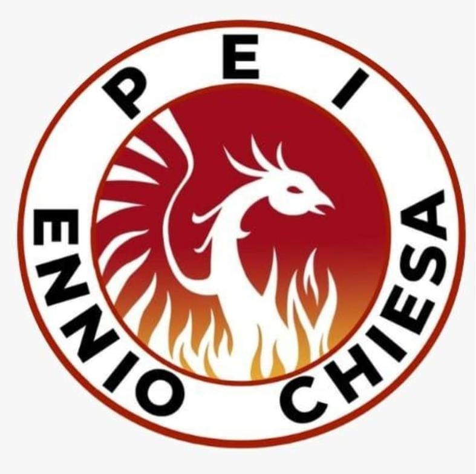

Conheça todos os profissionais da nossa escola
Ver toda a equipe
Acontecerá na próxima sexta-feira!

Os jogos começam semana que vem.

Evento sobre carreira militar será realizado.

Terça-feira às 19h.